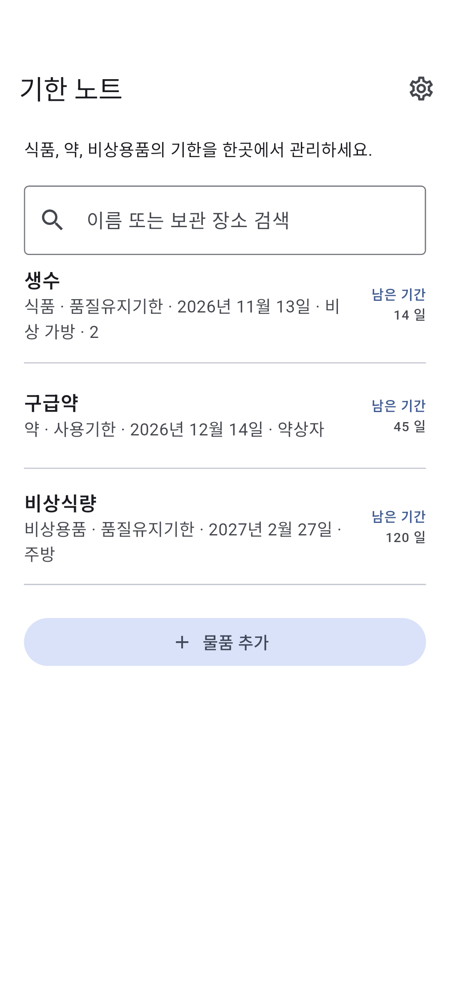

HOW IT WORKS
앱 소개
01
이름과 날짜 등록
02
기한 종류 선택
03
가까운 날짜부터 확인
앱 소개
- 물품 종류
- 식품 · 약 · 비상용품 · 기타
- 보관 장소 (선택)
- 이름 또는 보관 장소 검색
- 기한 종류
- 품질유지기한 · 소비기한 · 사용기한
- 기한 알림
- 기한 3개월 전, 1개월 전, 당일 오전 9시경에 알립니다. 알림 허용이 필요합니다. 가까운 알림 날짜 60개를 예약하므로 앱을 정기적으로 열어 주세요.
개인정보
기록은 기기에 저장되어 오프라인에서도 볼 수 있습니다.
앱 삭제나 기기 고장 시 데이터가 사라질 수 있습니다.
항목은 이 기기에 저장됩니다. 광고 제공업체가 데이터를 사용할 수 있습니다.
제품에 표시된 기한을 확인하세요.